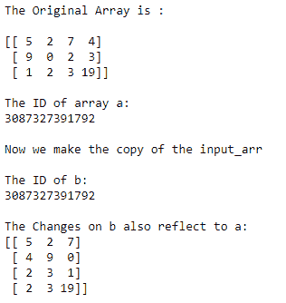

NumPy 副本和视图
原文：https://www.studytonight.com/numpy/python-numpy-copy-and-view
在本教程中，我们将介绍 NumPy 库中 ndarray 的副本和视图概念。
在 Numpy 中，使用copy()和view()函数，我们可以创建任何现有数组的新副本，或者为该数组创建新视图。
让我们看看副本和视图的主要区别是什么:
副本和视图的主要区别在于
copy()函数创建了一个新的数组，而view()函数创建了原始数组的一个新的视图。这里需要注意的是物理上输入数组的副本存储在某个其他位置，而在视图的情况下，返回相同存储位置的不同视图。通俗地说，可以说副本只是物理存储在另一个位置，视图具有与原始数组相同的内存位置，但表示不同。
因此，这里需要注意的是，副本对象拥有数据的 ，无论何时对输入数组的 cop y 进行任何更改，都不会影响到原始数组，同样，对原始数组进行的任何更改也不会影响到数组的副本。
另一方面，视图不拥有数据，如果视图有任何变化，那么它肯定会影响原始数组，而对原始数组的任何变化都会影响视图。
无拷贝或阵列分配
如果您将一个 numpy 数组分配给另一个数组，那么它不会创建原始数组的直接副本，而是创建另一个具有相同内容和相同 id 的数组。因此，它成为对原始数组的引用。
如果您对该参考阵列进行任何更改，则这些更改将直接反映在原始阵列中。
这里使用的
id()函数主要是返回数组的通用标识符，类似于 c 中的指针
因此，我们可以说，如果我们只使用一个简单的赋值操作符，那么只会创建一个引用，而不是实际的新副本。
让我们看一个同样的例子:
import numpy as np
input_arr= np.array([[5,2,7,4],[9,0,2,3],[1,2,3,19]])
print("The Original Array is :\n")
print(input_arr)
print("\nThe ID of array a:")
print(id(input_arr))
b = input_arr#assigning input_arr to b
print("\nNow we make the copy of the input_arr")
print("\nThe ID of b:")
print(id(b))
b.shape = 4,3; #making some changes to b
print("\nThe Changes on b also reflect to a:")
print(input_arr)
下面是上面代码的输出:

数字拷贝或深度拷贝
任何数组的副本基本上都是一个新数组，当我们使用copy()函数创建副本时，它也被称为深度副本。
我们已经告诉你了数组的副本，拥有数据。
所以无论何时我们都会对副本进行修改，这样就不会影响到原阵
同样地，当对原始数组进行更改时，它不会影响副本。
要返回输入数组的副本，使用
numpy.ndarray.copy()功能。
使用numpy.ndarray.copy()功能:
这个函数基本上返回输入数组的副本。使用此函数的语法如下:
numpy.ndarray.copy(order='C')
在上面的语法中，采用了order参数。
order参数主要用于控制副本的内存布局。这里的 C 是指 C 阶， F 是指 F 阶， A 也是指 F 如果给定数组是 Fortran 邻接的，则 C 否则。 K 表示(尽可能匹配给定数组的布局)。
numpy.ndarray.copy()示例:
在下面给出的示例中，我们将复制输入数组，然后对输入数组进行更改，然后检查它返回的内容:
import numpy as np
# Let us create an array
a = np.array([5, 4, 6, 8, 9])
#Let us create the copy of input array
c = a.copy()
#Now let us check the id of a and c
print("The id of input array a :")
print(id(a))
print("The id of c is:")
print(id(c))
#Now changing the original array
a[0] = 25
# printing both input array and copy
print("The original array:")
print(a)
print("The copy is:")
print(c)
输入数组 a 的 id: 3087432353792 c 的 id 为: 3087432353952 原数组: 【25 4 6 8 9】 副本为: 【5 4 6 8 9】
数字视图或浅拷贝
视图只是原阵的一个视图。
当我们创建任何给定数组的视图时，它也被称为浅拷贝。
与副本不同，视图不拥有数据。
这意味着如果我们对视图进行任何更改，那么它将影响原始数组类似地当我们对原始数组进行更改时，它将影响视图。
要返回输入数组的视图，使用
numpy.ndarray.view()功能。
使用numpy.ndarray.view()功能:
该函数主要用于获取具有相同数据的任意给定数组的新视图。使用此函数的语法如下:
ndarray.view(dtype=None, type=None)
参数:
让我们讨论上述参数:
数据类型 表示返回视图的数据类型描述符，如
float32或int16。默认值为None，这将导致视图具有与给定数组相同的数据类型。类型 表示返回视图的类型。
numpy.ndarray.view()示例:
在下面给出的示例中，我们将创建输入数组的视图，然后对输入数组进行更改，然后检查它返回的内容:
import numpy as np
# given input array
ar = np.array([2, 4, 6, 8, 10,12])
# creating the view
v = ar.view()
# Now both arr and v will have different id
print("The id of ar")
print(id(ar))
print("The id of v")
print(id(v))
# changing the original array will also effect view
ar[3] = 16
# printing both array and view
print("The Original array:")
print(ar)
print("The view:")
print(v)
ar 的 id 3087432354752 v 的 id 3087432354352 原阵: 【2 4 6 16 10 12】 视图: 【2 4 6 16 10 12】
摘要
本教程是关于创建 Numpy ndarray 的不同副本和视图，以及它们的不同行为。我们已经介绍了无拷贝、深度拷贝和浅拷贝及其功能，并提供了它们的代码示例。我们建议多做一些练习，多举几个例子来完全理解这些概念。